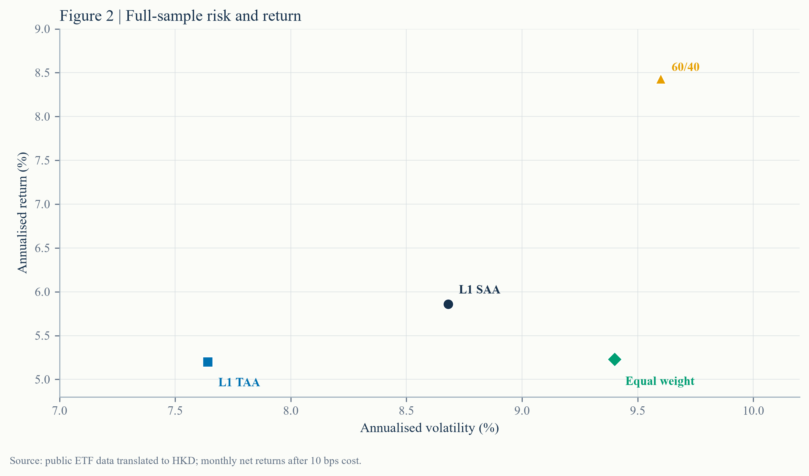
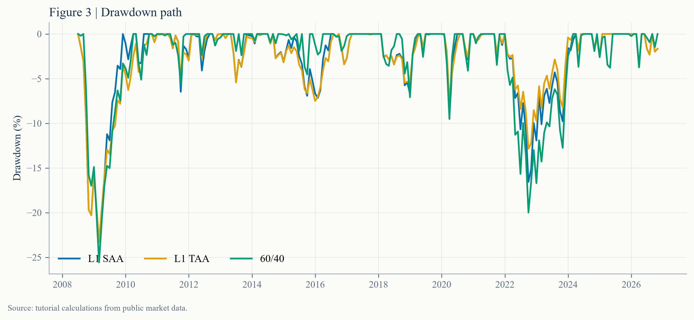
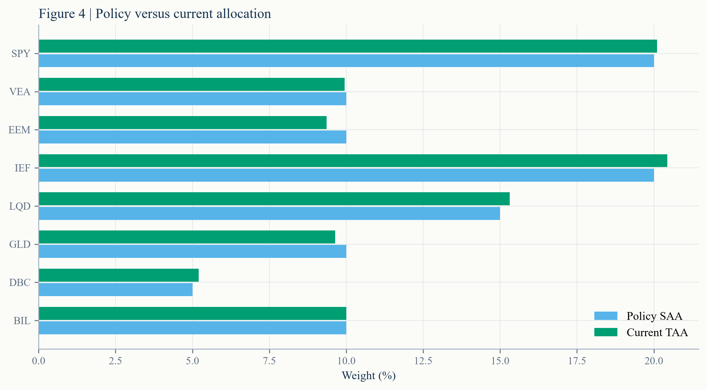
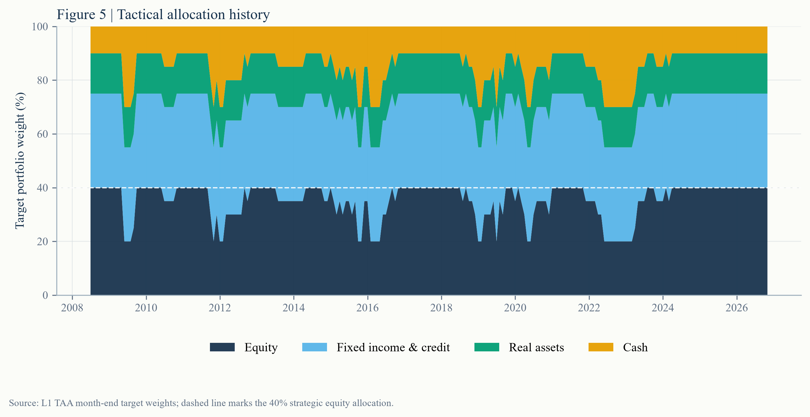
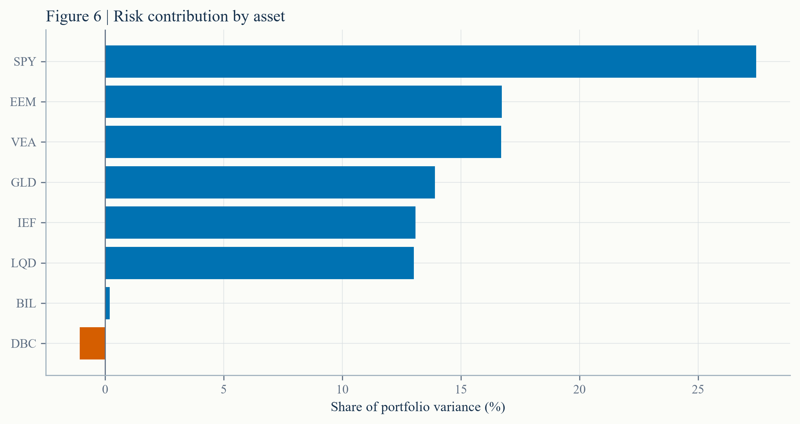
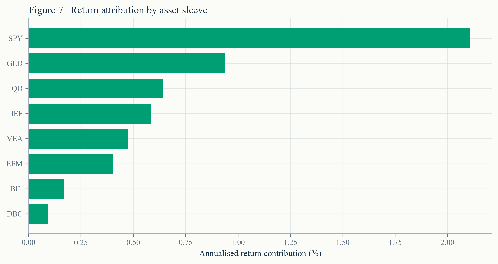

L1 SAA
Policy weights
40% equity, 35% duration and credit, 10% gold, 5% commodities and 10% short-term bills.
L1 · MULTI-ASSET PUBLIC SHADOW PORTFOLIO
A rules-based research portfolio that connects strategic allocation, a transparent tactical overlay, HKD translation, transaction costs, risk concentration and return attribution. The objective is a repeatable decision process, not a claim of market foresight.
The series is a paper portfolio using public ETFs and foreign-exchange data. It contains no real money, personal account or broker execution.
01 INVESTMENT QUESTION
The portfolio is judged against a static policy portfolio, a 60/40 index proxy and an equal-weight multi-asset basket. The question is not whether it earned the highest return in history; it is whether the rules are explicit, repeatable and explainable after costs and currency effects.
Over the full sample, the simple 60/40 proxy delivered a higher annualised return and Sharpe ratio than either L1 portfolio. The trend overlay slightly reduced volatility but did not create enough return to justify a claim of superior allocation skill.
02 METHOD
L1 SAA
40% equity, 35% duration and credit, 10% gold, 5% commodities and 10% short-term bills.
L1 TAA
If a regional equity sleeve has a negative 10-month return, halve that sleeve and hold the proceeds in bills.
Evaluation
Targets use information through the prior month-end. Returns are in HKD, unhedged, with 10 bps cost per unit of turnover.
| Sleeve | Ticker | Policy weight | Role |
|---|---|---|---|
| US large-cap equity | SPY | 20% | Global growth |
| Developed ex-US equity | VEA | 10% | Geographic diversification |
| Emerging-market equity | EEM | 10% | Higher-growth and FX exposure |
| US 7–10 year Treasury | IEF | 20% | Duration and recession hedge |
| US investment-grade credit | LQD | 15% | Carry and credit exposure |
| Gold | GLD | 10% | Real-rate and tail hedge |
| Broad commodities | DBC | 5% | Inflation sensitivity |
| Short-term Treasury bills | BIL | 10% | Liquidity and tactical buffer |
03 RESULTS

| Portfolio | CAGR | Volatility | Sharpe | Max drawdown | Avg. turnover |
|---|---|---|---|---|---|
| L1 SAA | — | — | — | — | — |
| L1 TAA | — | — | — | — | — |
| 60/40 | — | — | — | — | — |
| Equal weight | — | — | — | — | — |

The chart makes the trade-off visible without ranking portfolios by a single number. The 60/40 proxy has the highest return in this sample but also higher volatility than L1 TAA. L1 TAA moves left on risk, not up on return: the overlay reduced variance without repairing the performance gap.

04 CURRENT SNAPSHOT


Most of the time the grouped allocation stays close to policy. When an equity trend turns negative, the visible cash band expands as the affected sleeve is halved. This is a bounded risk-control rule, not a claim that the model can time every turning point.
| Sleeve | Ticker | Current weight |
|---|---|---|
| US large-cap equity | SPY | — |
| Developed ex-US equity | VEA | — |
| Emerging-market equity | EEM | — |
| US 7–10 year Treasury | IEF | — |
| US investment-grade credit | LQD | — |
| Gold | GLD | — |
| Broad commodities | DBC | — |
| Short-term Treasury bills | BIL | — |
05 RISK

The three equity sleeves are 40% of policy capital but account for roughly 61% of model-based portfolio variance. The conclusion is structural, not a market forecast.
Their risk contributions differ from their capital weights and can be negative when their covariance with the portfolio is favourable. That makes capital allocation and risk allocation separate decisions.
06 ATTRIBUTION

07 DECISION LOG
A negative 10-month return in any equity sleeve would halve that sleeve and move the proceeds to short-term bills. A policy change requires a new version number; it cannot be applied retroactively.
08 LIMITS
A well-known benchmark outperformed the more diversified allocation over this sample. The correct response is to investigate period dependence, currency exposure and risk objectives, not to rewrite the backtest until the desired winner appears.
09 REPRODUCE
Download the latest weights, monthly history and investment memo.
Adjusted ETF closes and USD/HKD are downloaded from Yahoo Finance via
yfinance. Raw vendor data is not redistributed. Returns are
unhedged HKD translation of USD-listed proxies.